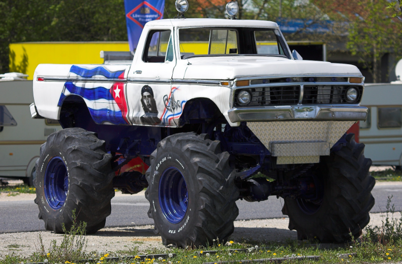

Emmanuel Macron propose finalement la retraite à 63 ans et 12 mois
Mais alors que contient cette nouvelle réforme ? Le président en a expliqué les contours “
Il faudra donc travailler jusqu’à 63 ans pour avoir sa retraite complète au lieu de 64 ans,
comme le prévoyait le précédent texte. Avec un Peeeeetit supplément de 12 mois. 3 fois rien.
Je m’y engage solennellement devant tous les Français.”
Du côté de l’opposition, on salue le geste mais on reste méfiant “
Si c’est sincère, on est prêt à accepter. Mais j’attends de voir le texte,
faut toujours se méfier avec eux. 12 mois ok. Mais faudrait pas que de fil en aiguille, ça se transforme
en 1 an de travail en plus.” nous lance Philippe Martinez, le secrétaire général de la CGT.
Se son côté Elisabeth Borne, pas en reste, a proposé en outre que les partis d’oppositions seraient sollicités
pour décider de la couleur des dossiers dans lesquels seront contenus les prochains textes du 49.3
Laissé sans surveillance par Élisabeth Borne, un 49.3 circule en liberté dans Paris
Des scènes de chaos qui se sont répétées tout au long de la nuit après que le 49.3 a profité d’un moment d’inattention
d’un des chefs de cabinet de la Première ministre pour s’échapper. « D’ordinaire, ils sont très surveillés.
Je ne comprends pas ce qui a pu se passer » a sobrement commenté un responsable de la sécurité de Matignon
qui alerte sur les dangers d’approcher un 49.3 à mains nues. « C’est un animal sauvage, peu docile, qui peut vous bouffer
ou déchirer une majorité » explique un vétérinaire. De son côté la Première ministre assure que tout est sous contrôle.
« Je vois surtout une fois de plus l’opposition clownesque qui essaie de faire peur avec ce pauvre 49.3 en liberté alors
qu’il n’a jamais fait de mal à personne » alors qu’on apprenait qu’une motion de censure venait de son côté de s’échapper
des locaux d’une permanence de la NUPES, laissant craindre un affrontement implacable dans les rues de Paris.
Fact-check : Elisabeth Borne a-t-elle vraiment écrasé un pauvre avec un monstertruck ?

ActuInfos, soucieux de vérifier les rumeurs qui se propagent sur les réseaux sociaux, a dépêché ses meilleurs
« fact-checkeurs » pour savoir si oui ou non, la Première Ministre avait roulé sur un pauvre au volant d’un
immense véhicule américain customisé de type monstertruck. Les faits se seraient déroulés la semaine dernière
et nous avons patiemment recoupé les informations pour démêler le vrai du faux.
1 – Le Monstertruck : VRAI. Elisabeth Borne était bien au volant d’un de ces véhicules aux roues dépassant les deux mètres de haut.
« Celui qu’a choisi la Première Ministre avait déjà été loué par le chanteur Kid Rock en 2003 » précise le locataire de l’engin.
« Nous l’avons floqué aux couleurs de LREM en lettres de sang pour l’occasion« .
2- L’écrasement : VRAI et FAUX. Frédéric Bardoux, 45 ans, a d’abord été percuté sur un terrain vague, parce qu’il n’a pas entendu
l’avertissement sonore de la Première Ministre. Ensuite, il a bien été écrasé par le monstertruck. « Il a été aplati jusqu’à avoir l’épaisseur
d’une pizza Margherita de supermarché » selon un témoin de l’événement peu inspiré pour les métaphores.
3- La pauvreté : FAUX. La victime, bien qu’au RSA, n’était pas si pauvre qu’elle le prétendait. En effet, Frédéric Bardoux avait des baskets de marque
(des Nike), un jean Levi’s de 2014 et une montre estimée à 45 euros. De plus, son embonpoint témoigne qu’il mangeait à sa faim.
Conclusion : cette rumeur n’est vraie qu’en partie, et la réalité est toujours plus complexe que les réseaux sociaux le prétendent. Il faut donc laisser
le bénéfice du doute à Elisabeth Borne et ne pas céder au lynchage médiatique.>